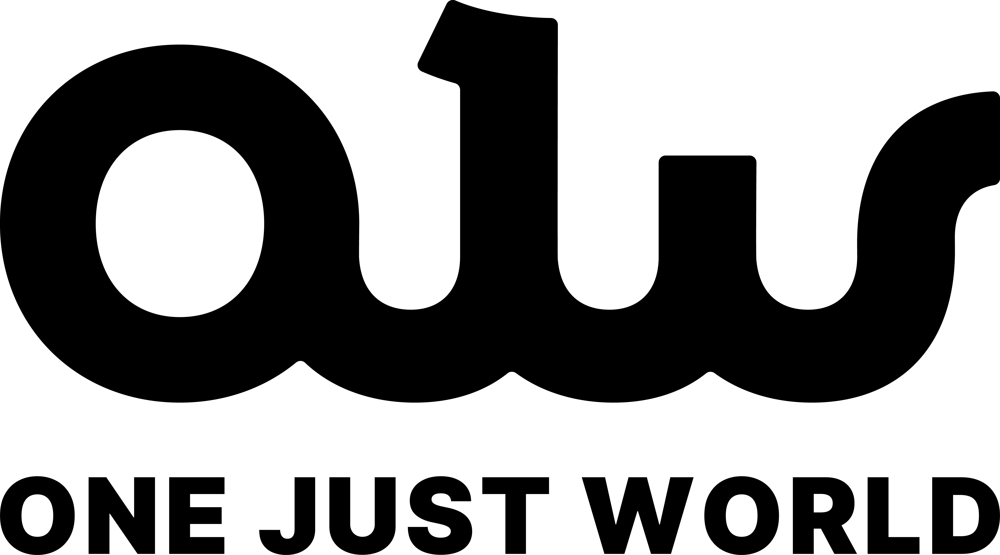
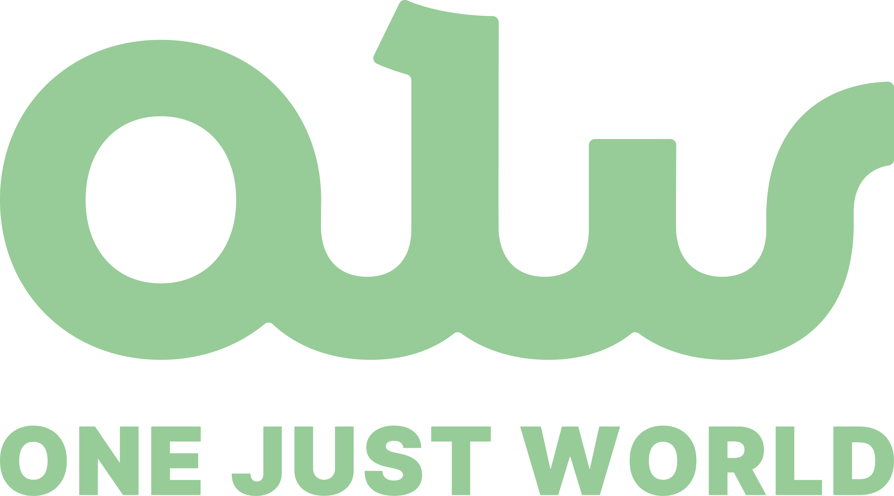
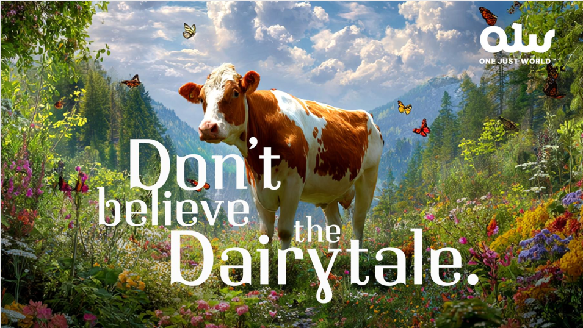
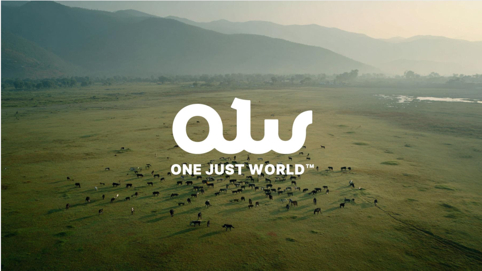
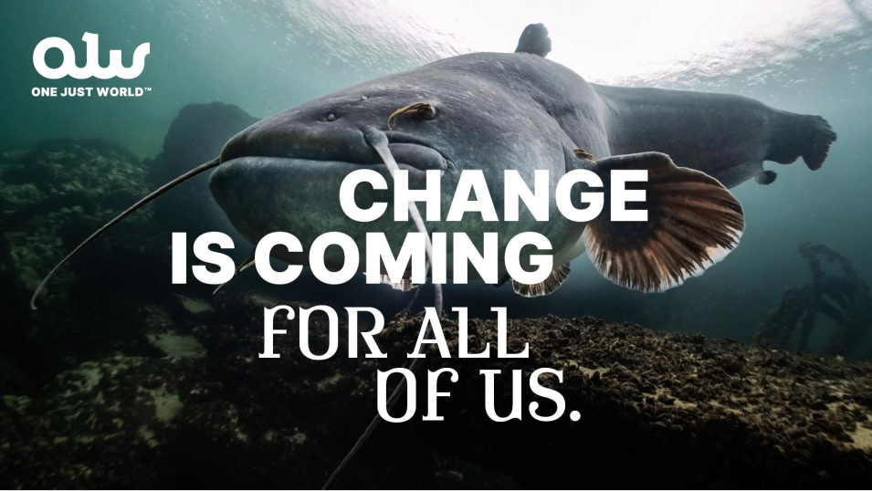
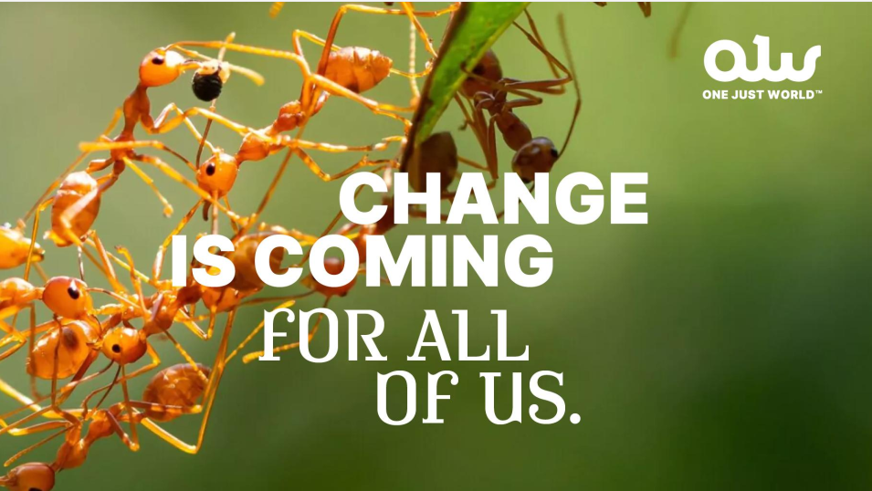
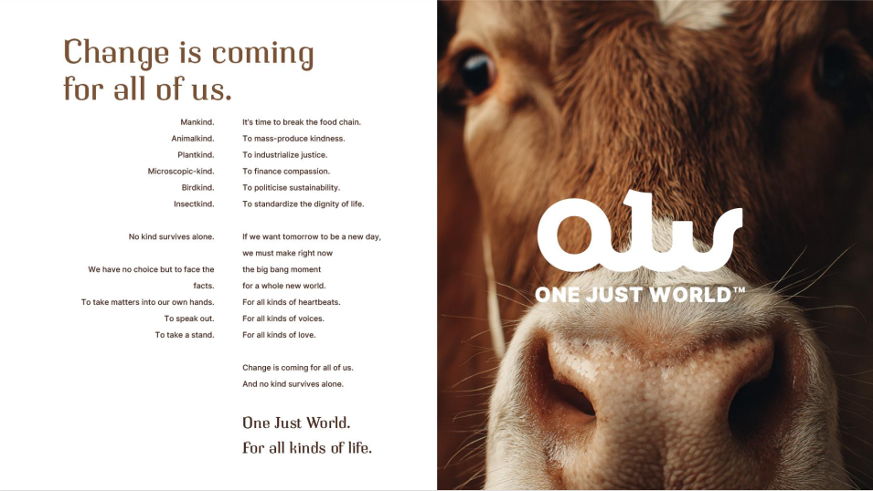

Wordmark "olw" + "ONE JUST WORLD" lockup. The mark's curved baseline echoes a wave — use the wave divider as a recurring graphic motif. Logo prefers space; never crowd.
Black on Cream

Black on White
White on Deep Green
Light Green on Deep Green

Deep Green on Light Green
Mark only · Black
Green-on-green combinations are the hero treatment for brand-identity moments (covers, tagline plates). The mark's curved baseline is itself a wave — the recurring motif.
01.5Reference Imagery
Existing OJW campaign visuals. The signature look: full-bleed, high-saturation nature photography with the logo placed top-corner and either Cooper BT (for "Don't believe the Dairytale") or Inter Black uppercase (for "CHANGE IS COMING") layered on top. Hero photography emphasises animals, ecosystems, and Indian landscapes — never abstract graphics.





02Color
Greens dominate. Neutrals carry copy. Signal red and highlight yellow are accents — never foundations. A standard carousel should feel green-first, with cream/white breathing space.
Primary Brand Greens
Deep Forest
#012c12
Dominant · Backgrounds
Mid Green
#659d67
Secondary surfaces
Light Green
#97cc98
Tints · Soft fills
Cream
#d2dfd7
Paper · Calm bg
Neutrals
Black
#000000
Type · Logo
White
#ffffff
Cards · Reverse
Mist
#bfc9c2
Borders · Dividers
Ink
#1a1a1a
Body text
Accents — use sparingly
Signal
#e62154
Alerts · CTAs
Highlight
#fff500
Underlines · Marker
03Type
Inter is primary — the full hierarchy lives there. Cooper BT is the secondary display face — chunky, rounded, warm. Display only, never long copy. Use weight 900 (Black) for hero, 700 (Bold) for mid, 300 (Light) for editorial moments. Carousel sizes are larger than web; scale below is tuned for 1080–1200 wide canvases.
Display · Cooper BT Light64 / 1.1 Editorial, manifesto-style
Change is coming for all of us.
H1 · Inter Bold96 / 1.02 / -0.025em
Milk is not vegetarian.
H2 · Inter Bold72 / 1.05 / -0.02em
Truth, not alarm bells.
H3 · Inter SemiBold52 / 1.1
175 changemakers in two weeks
Body · Inter Regular28 / 1.45
A generation deeply aware of systemic crises, yet cynical about performative activism. They crave honesty, inclusivity, and agency — not slogans or guilt.
Eyebrow · Inter SemiBold22 / 0.12em uppercase
Knowledge Tools · Bucket 03
Highlightyellow underline on key words
Compassion is activism.
04Voice & Tone
"The truth, raw, unfiltered, and collective." Confident, not defensive. Impact-oriented, not emotional overload. Indian in context. Compassion-led. Reconstruction is our main identity — deconstruction is occasional.
Tone checklist
Positive Gen Z energy
Compassion clearly embedded
Justice framing visible
Indian in context
Avoids shaming
Connects harms intersectionally
Visual checklist
Human faces > graphics
Warm earthy palette
Indian cues (texture, type, culture)
Clean layout, no clutter
Greens dominant; signal/highlight as accents only
Clear, direct truths
Academic jargon
Confident statements
Defensive hedging
Impact-oriented language
Emotional overload / guilt
Joyful, future-facing
Doom-spiral tone
Names dairy industry contradictions
Villainises individual farmers
05Frames
Cross-cutting lenses. Every post must link to at least one. If none apply → rethink the post.
01
Wellness
Youth health, calcium, nutrition.
02
Sustainability
Lifestyle, not climate-heavy.
03
Economically Smart
Procurement, cost, scale.
04
Compassion
Constitutional + cultural ahimsa.
05
Youth Leadership
Gen Z agency, distributed.
06
Future-Focused India
Modern, joyful, plant-based.
06Content Buckets
Six buckets feed the calendar. Each carousel should declare which bucket it lives in — keeps the system honest.
01
Changemaker Stories
Peer credibility + distributed leadership.
30-sec Reel5-slide Case StudyQuote Card"How We Did It"
02
Proof of Impact
Legitimacy + scale. Always share what worked, why, and what changed.
This Week in NumbersMedia Coverage CollageBefore/AfterReach Snapshot